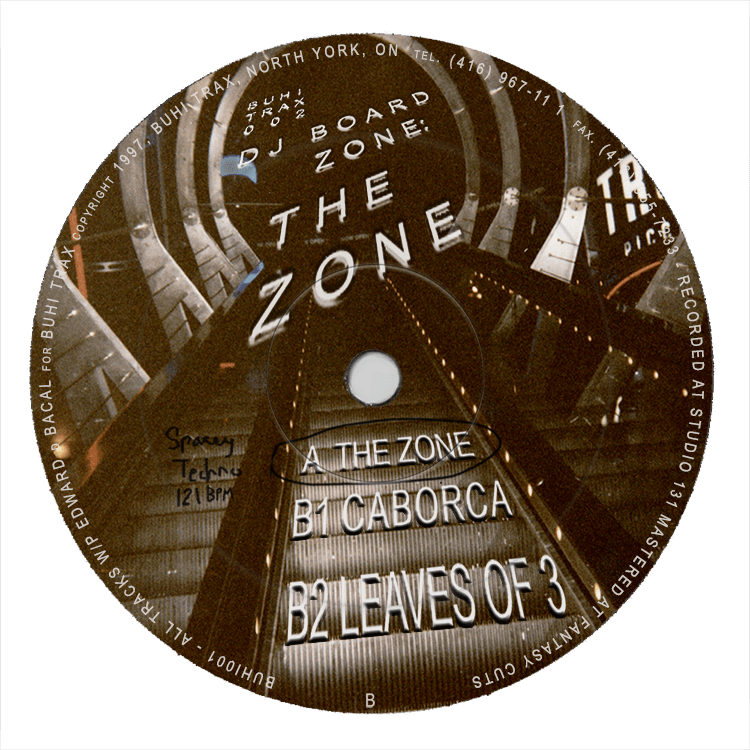
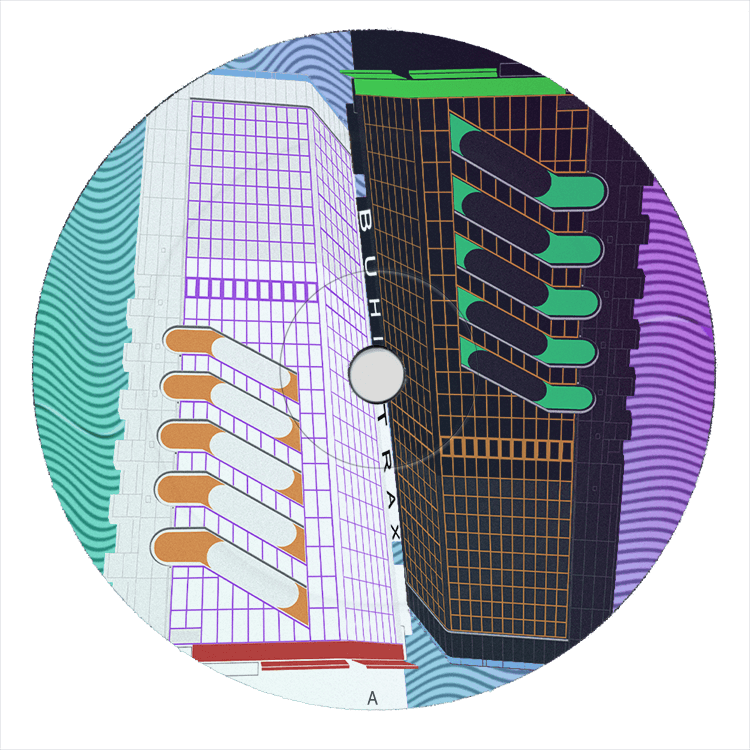
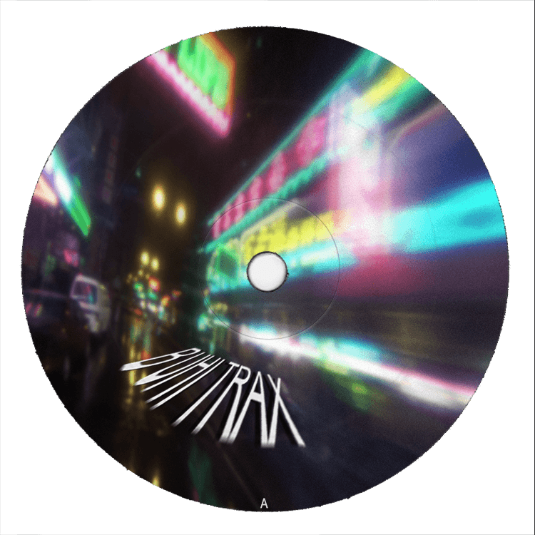
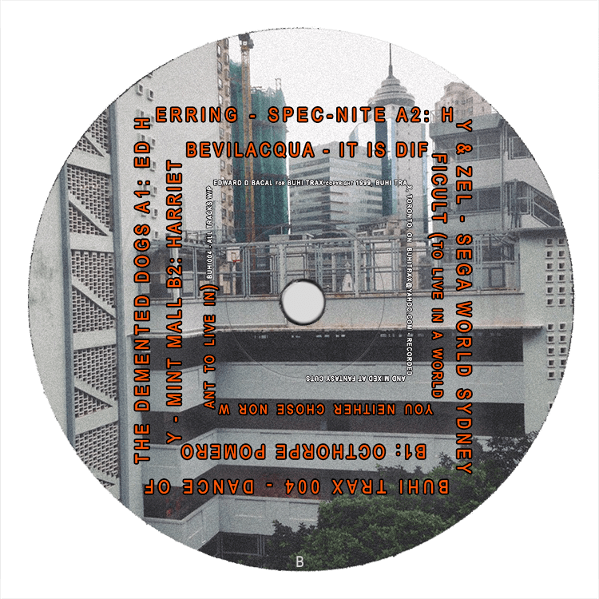
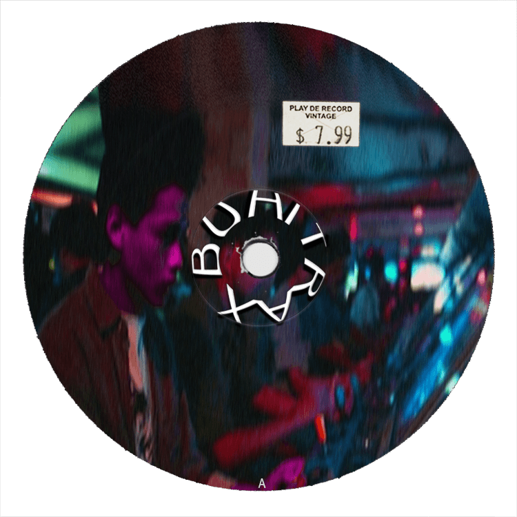
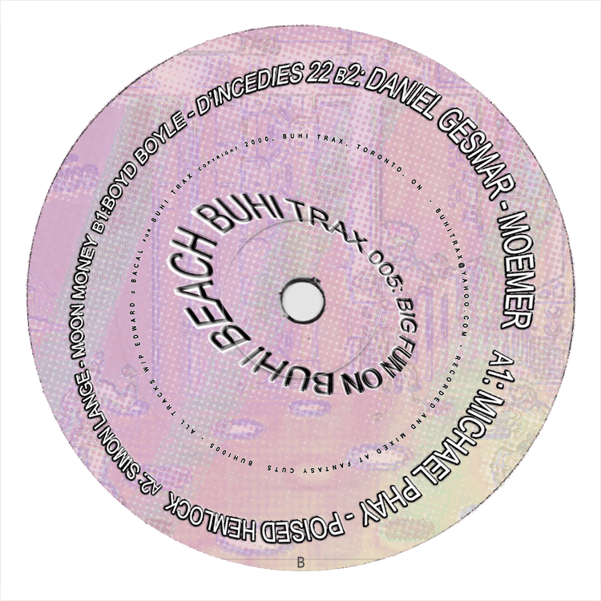
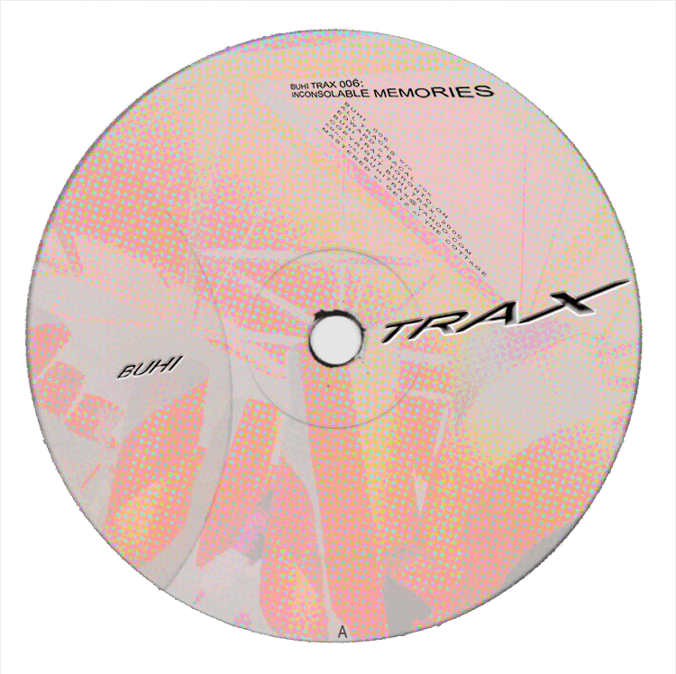
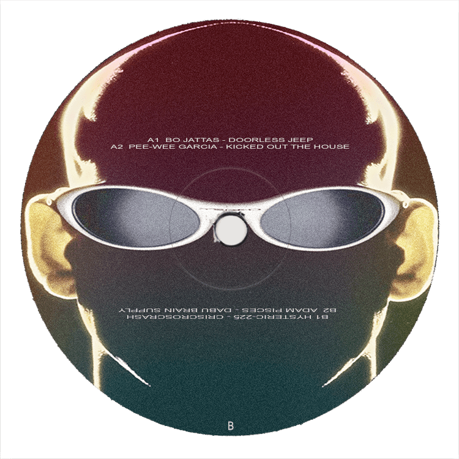

Hi! This site is in development, kindly check back soon! March 2021
BUHI TRAX
BUHI trax is a long-forgotten (but very real) record label dedicated to releasing music by a variety of unknown (also very real) artists.
From its first release in 1996, B-T acted as a network for unconnected producers in and around toronto, a platform for isolated artists to release their work into the world.
Today, its discography archives a unique moment and feeling in electronic music, offering a glimpse into a time and place when the dream of a future that would never come was still real.
BUHI001
Buhi-Trax was formed in 1996 by a pair of DJs and producers in Toronto, Digmoy Hindelbein (AKA DJ Everything-Bagel) and Lockport Gambino-Ford. United by a feeling of alienation from the city's electronic music scene, the pair combined efforts and resources to create a platform of their own, beginning with their landmark party at "Club MDAC." Having gained semi-legal access to disused loft space on the fifth floor of a North York office building, the MDAC rave was a crucial opportunity to not only perform live, but to also use the space as a temporary studio. For the event, Hindelbein and Gambino-Ford recruited the sibling-duo Dino and Romano, a fixture of Toronto's 90s house scene, who ran the established studio, Fantasy Cuts. Dino and Romano brought much of their equipment to Club MDAC, adding to an already impressive setup, providing a strong basis to record original tracks. These tracks, later engineered at the nearby studio Trezzano's, would make up the first Buhi-Trax release. Although released in small quantity to limited fanfare, this EP inagurated a flurry of creative activity that would see the nascent label through to the year 2000.
BUHI001

BUHI002
"SegaWorld London was a Sega World indoor amusement theme park which opened on September 7, 1996. Housed within the London Trocadero entertainment and retail complex, the site became the flagship Sega venue in the UK and Europe, building on earlier success seen at Sega World Bournemouth and in other countries on the continent with the Centre Sega and Sega Park franchises. It was claimed to be the largest indoor theme park in the world, occupying an area of 10200m² on seven floors making it the largest of Sega's venues to have been fully developed, but has since closed permanently.... Sega's ten-year deal with Trocadero PLC included a three-year early termination clause if a £3 million profit had not been achieved, and this was exercised in September 1999 against an overall backdrop of losses in the amusement sector at the company, which shortly afterwards also influenced the closures of several of Japan's Joypolis venues and Sega World Sydney in Australia." (segaretro.org)
BUHI002
BUHI003
As the biggest mecca in the world for anime and video game fans, Tokyo’s Akihabara neighborhood has an unabashed affection for new technology and fresh content. And yet, perhaps because of the wonderland-like atmosphere for fans, there’s also a lot of nostalgia for the most recognizable examples of Akiba architecture. Unfortunately for everyone who wants Akihabara to stay as it is in their memories, one of the district’s most iconic video game arcades has announced it will be closing down, and with very little advance notice. The Sega Akihabara Building 2 arcade, located along the southern edge of Akihabara, will be shutting its doors on August 30. (soranews24)
BUHI003

BUHI004
BUHI004
BUHI005
"Sega received the music for Streets of Rage 1 really well. So, I wanted Streets of Rage 2 to continue where it left off. The club sound is something that’s ever-changing. The music I made for Streets of Rage 2 was more techno than the first game. That’s because it was techno and hard techno that I was hearing when I went to Yellow and other clubs. It’d been getting more and more popular. I was aiming first to bring in new sounds, rather than trying to take it to the next level. I was hoping to make it sound more up-to-date when I made it. Not only that, but house music had evolved as well as techno, and was kind of leaning towards funk.If you’re wondering what changed exactly, it was the development of the samplers back then. A style incorporating old funk music, ethnic music and such, with beats from the 808 and 909, established itself, and that time saw a lot of evolution. I wanted to reproduce that in Streets of Rage 2. I made a lot of different percussion sounds with FM. I tried putting the beats in more complex arrangements. The synthesiser was the same too. At the time there weren’t just beats, but a Roland bass machine called the TB-303 too. If you opened and closed the filter, it made a distinctive sound. I wanted to reproduce that with FM synthesis. ... I feel happy when people tell me they like the Streets of Rage 3 soundtrack, but I think there might’ve been some people who couldn’t take listening to it. Maybe now young people can listen to this kind of track without feeling uneasy. Back in 1994, the reason I tried to make this kind of track was because I wanted to reproduce the kind of music I was hearing at Yellow. I made it with the idea of further evolving what I’d done in Streets of Rage 2." (Yuzo Koshiro)
BUHI005
BUHI006
Ontario Place is an entertainment venue, event venue, and park in Toronto, Ontario, Canada. The venue is located on three artificial landscaped islands just off-shore in Lake Ontario, south of Exhibition Place, and southwest of Downtown Toronto. It opened on May 22, 1971, and operated as a theme park centered around Ontario themes and family attractions until 2012 when the Government of Ontario announced that it would close for redevelopment. It has since reopened as a park without admission but without several of the old attractions. The Government of Ontario is currently considering further redevelopment of the site. Since the closure as a theme park, several of the venue's facilities have remained open, once reopened, and one section was redeveloped. The Budweiser Stage operates during the summer season. The Cinesphere, the original IMAX theatre, reopened with new projection equipment and shows films regularly. On the East Island, Trillium Park and the William Davis Trail opened in 2017. A marina, sheltered by three sunken lake freighters operates seasonally at the site. The exhibit "pods", several pavilions suspended above a lagoon, have remained closed after the closure of the Atlantis event facility. The West Island has been repurposed for recreation use and special events. (Wikipedia)
BUHI006
